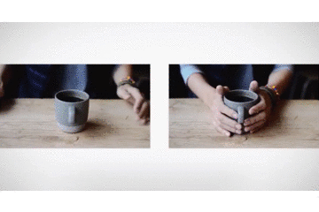

『歩道橋から』
写真を絡めたデザイン手法で興味のあった「シネマグラフ」のサンプルを作ってみました．三脚で撮影した動画をPhotoshopに取り込み、静止させたいフレームをくり抜いてマスクにします。作り方は
こちらを参考にしました。

独特な動きで目を引く手法でありつつ実態は単なるGIF画像なので、簡単に実装できます。単に背景画像として利用しても良し、他のアニメーションやユーザーの動作と組み合わせても良しで、脇役でも主役でも活躍できそうです。今回はfreezeframeというJavaScriptライブラリを使って、マウスがホバーした時だけアニメーションが再生されるようにしています。

▼説明を表示